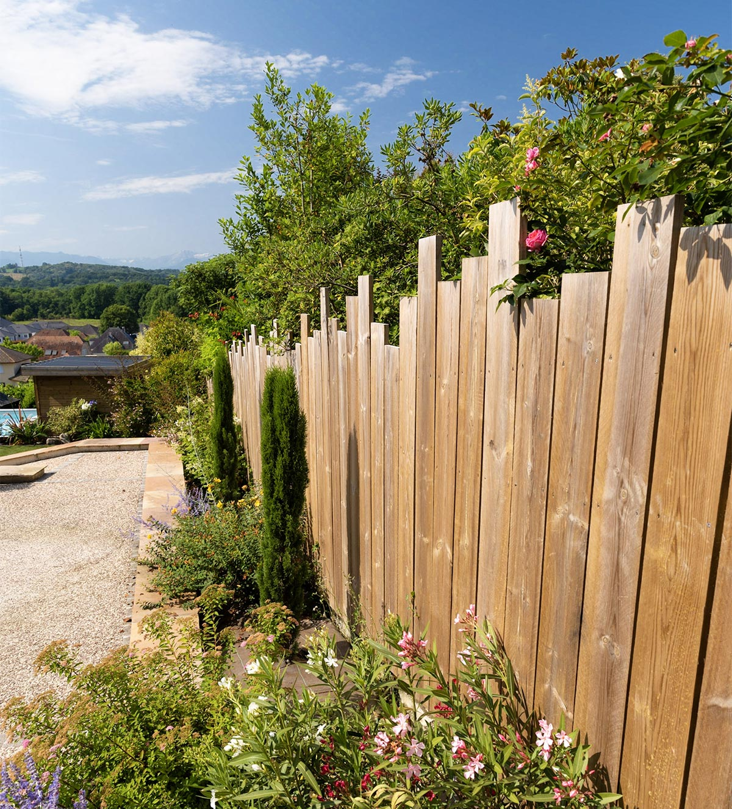
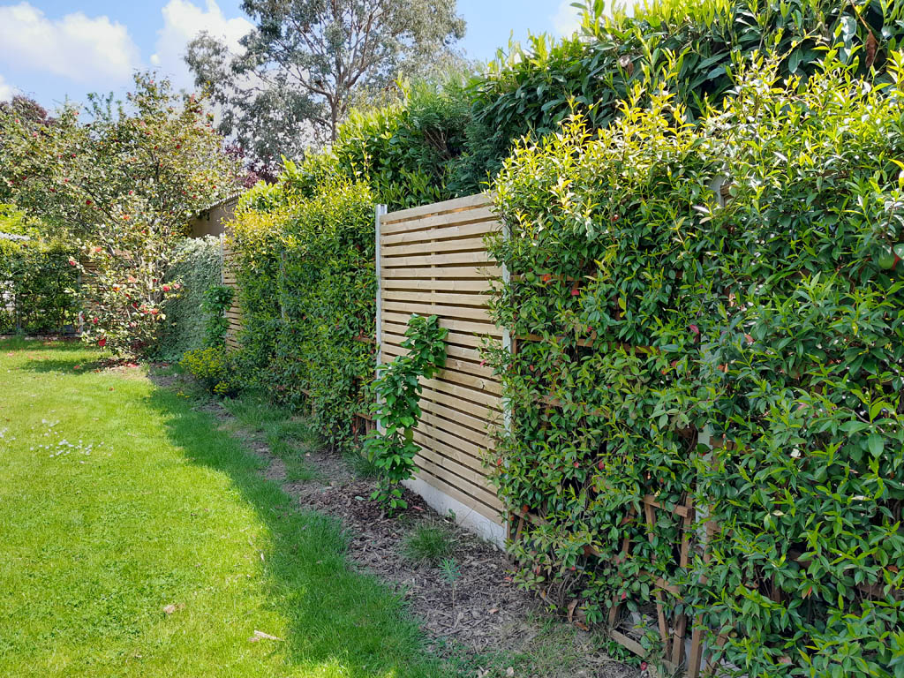

Entourez votre jardin avec beauté et de manière écologique
Vous souhaitez délimiter, sécuriser ou embellir votre propriété ? Notre service de création de clôtures vous propose des solutions sur mesure adaptées à vos besoins et à votre style.
Vous rêvez d’un espace extérieur préservé des regards tout en favorisant la biodiversité ? Notre service de création de palissades végétales vous offre une solution esthétique, écologique et durable.
